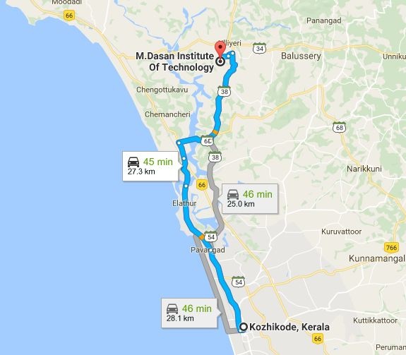

ADDRESS:
M.Dasan Institute Of Technology(M-DIT ),
Ulliyeri P.O,
Kozhikode

M.Dasan Institute Of Technology(M-DIT ),
Ulliyeri P.O,
Kozhikode
M Dasan Institute of Technology (M-DIT) KOZHIKODE was established in 2012-13.
The college is approved by the All India Council for Technical Education, New Delhi and
affiliated to KTU. It is on the State Highway connecting Kozhikode and Kuttiady, about 18 kilometres
from Kozhikode city.
Prayer meeting:Don't have prayer meeting. Had a small partcipation in MMC meeting till 2014
How to reach:Catch Kuttyadi bus from New Bus stand and get down at Modakkalloor get auto from there to MDIT.
Possibility:MMC can reach out to the college and can be accomadated in MMC prayer meeting